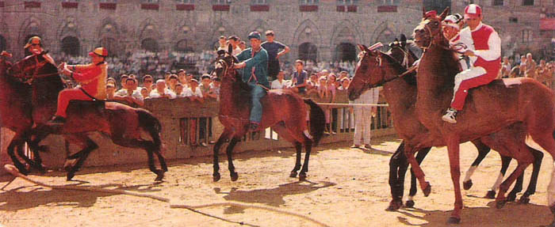

- Le prove vengono svolte al mattino ed alla sera a partire dal pomeriggio del giorno della tratta fino al mattino di quello del Palio.
- Le Contrade non possono rifiutarsi di correre una prova a meno che il proprio cavallo non si trovi nell'impossibilità di correre. Previa visita veterinaria l'Autorità Comunale può dispensare la Contrada dal partecipare alla prova.
- Per il Palio di luglio gli orari sono: ore 9,00 per quella della mattina e ore 19,45 per quella della sera. Per il Palio di agosto: ore 9,00 per quella della mattina e ore 19,15 per quella della sera. In caso di pioggia, se il terreno è reputato particolarmente scivoloso, la prova può essere annullata.
- L'ordine di entrata ai canapi delle Contrade per ciascuna delle sei prove è stabilito come segue:
- I prova (sera del 29/6 o 13/8) ordine nel quale le Contrade entrano in Piazza per partecipare al Palio;
- II prova (mattina del 30/6 o 14/8) ordine invertito rispetto alla prima prova;
- III prova (sera del 30/6 o 14/8) ordine d'estrazione delle Contrade per l'assegnazione dei cavalli;
- IV prova (mattina del 1/7 o 15/8) ordine invertito rispetto alla terza prova;
- V prova detta anche "Generale" (sera del 1/7 o 15/8) ordine riferito al "numero d'orecchio" del cavallo;
- VI prova detta anche "Provaccia" (mattina del 2/7 o 16/8) ordine invertito della quinta prova.
